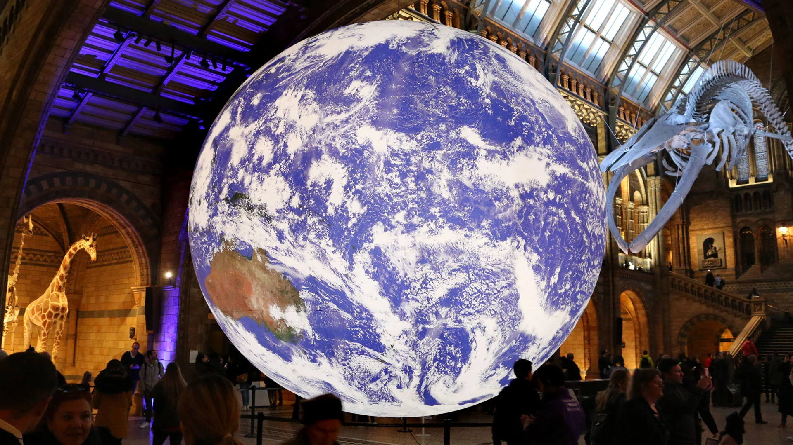
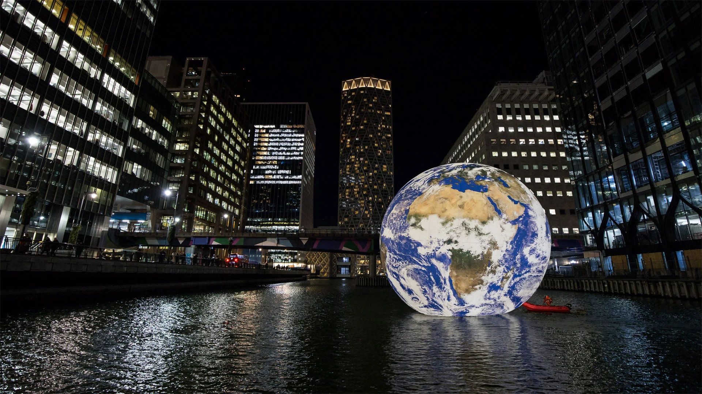

Expo Gaïa
Luke Jerram a créé Gaia pour attirer l’attention sur la fragilité de notre planète, pour questionner notre rôle dans sa préservation et nos comportements face aux conséquences du changement climatique.
Cette œuvre contemplative éveille nos sens et produit ce que l’auteur américain Frank White a appelé en 1987 « The Overview Effect » : une prise de conscience dont témoignent certains astronautes lors d’un vol spatial, une mise en perspective directe de la situation de la Terre dans l’espace. La Planète Bleue est ainsi perçue comme une petite et fragile boule de vie qu’il est urgent de protéger.